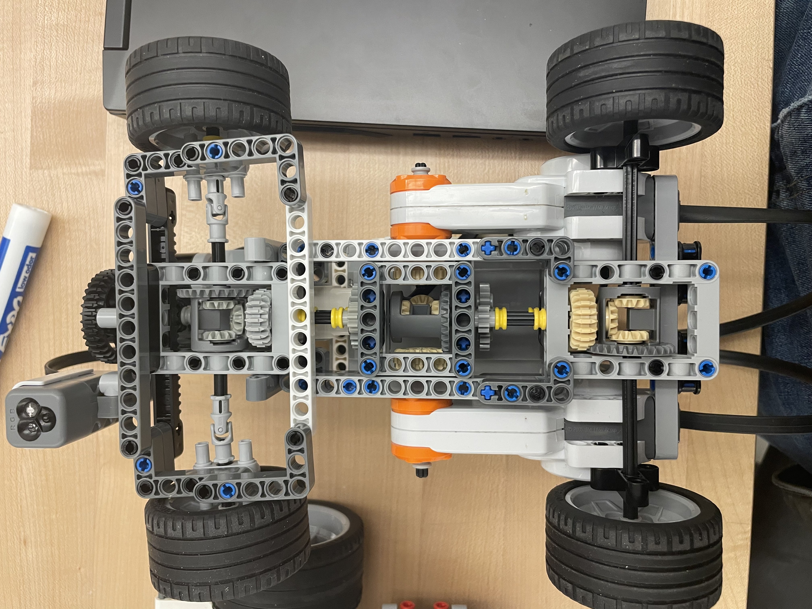

Different variations of line follower robots whose task is to smoothly and accurately follow a black line on a white background.
This system is based on the DE-10 Lite board by Terasic, which has a MAX 10 Intel FPGA at its heart.
This system utilizes the LEGO EV3 platform as the processing unit. The builtin OS is replaced with leJOS. The robot uses PID control to maintain its alignment with the line.
This system uses the same processing system as the previous robot. However, the mechanical component of the robot is built similar to a real life car. The car is powered by two motors. There are a total of three differentials. One distributes the power to the front and rear axle. The remaining two distribute the power between wheels on the same axle.
